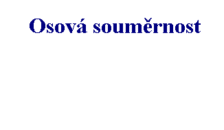 |

|
| Shodnımi útvary v rovinì rozumíme takové dva rovinné
obrazce, které se po posunutí na sebe navzájem kryjí. |
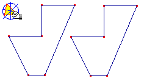
Jestli�e se pøesnì kryjí, jsou shodné. Ne v�dy však mù�eme útvar vystøihnout, pomù�eme si tedy takzvanou "Prùsvitkovou metodou". Ta spoèívá v tom, �e jeden z útvarù obkreslíme na prùsvitku a vzniklı obrys pøesuneme na druhı útvar. Jestli�e se obrysy obou útvarù pøesnì pøekrıvají, mù�eme øíct, �e jsou útvary shodné.Pozor ! Nezapomeòte, �e shodné útvary mohou bıt umístìny v rùznıch polohách. Mohou bıt rùznì otoèeny nebo pøevráceny. I vy tedy prúsvitkou otáèejte a pøevracejte ji, aby jste získali jistotu v následujícím cvièení .
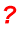
Které úseèky jsou shodné ?Které úhly jsou shodné ?
Zamysli se, o kterıch geometrickıch útvarech lze øíci, �e jsou v�dy shodné?
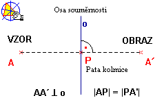
Osovou soumìrností vznikne tedy obraz, kterı je shodnı se vzorem a pøevrácenı ve smìru kolmém na osu. Pùvodní obrazec nazıváme VZOR, ten kterı vznikne zobrazením nazıváme OBRAZ, ten oznaèujeme vìtšinou jako vzor s èárkou. Pøímku, pøes kterou se vzor pøeklápí nazıváme Osa soumìrnosti.Na obrázku v Cabri se pokuste nastavit útvary tak, aby byly samodru�né, tj aby vzory splynuly s obrazy. Podaøilo se vám to u všech obrazcù ?
Zjistìte, kdy osová soumìrnost zachovává rovnobì�nost, to znamená, které úseèky vzoru jsou rovnobì�né se svımi obrazy.
Doká�ete ji� sami sestrojit obrazy jednoduchıch útvarù v osové soumìrnosti? Pokud si ještì nejste jisti, spus�te si konstrukci osové soumìrnosti, která vše objasní.
|
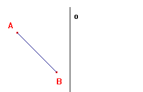 |
Postup konstrukce: Sestrojíme obrazy bodù A,B a spojíme v úseèku A'B'. Obrazy nalezneme tak, �e spustíme v�dy ze vzoru kolmici na osu soumìrnosti. Tím získáme bod P - patu kolmice o kterém víme, �e le�í ve støedu úseèky vzor obraz. Spus�te si následující animaci a úlohu vyøešte zároveò do sešitu. |
 |
|
| Osovì soumìrnı útvar se dá rozdìlit pøímkou na dvì shodné èásti, pro které platí: Kdy� pøeklopíme jednu èást podle této pøímky, kryje se pøesnì s druhou èástí. |
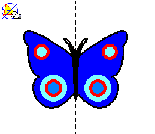
U geometrickıch útvarù rozhodneme o jejich soumìrnosti snadno. Setkali jsme se ji� s úhlem a jeho osou somìrnosti, toti� osou úhlu a víme i �e ka�dá úseèka má svou osu soumìrnosti a to osu úseèky.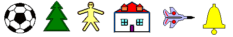
Naleznìte osy soumìrnosti u útvarù na obrázku.
Vyjmenujte ještì alespoò pìt osovì soumìrnıch útvarù.
Útvary však mohou mít i více ne� jednu osu soumìrnosti. To nejlépe uvidíte v následujícím cvièení.Kolik os soumìrnosti má ètverec, kolik kru�nice a kolik míè na obrázku ?
|
Støedová soumìrnost je, stejnì jako soumìrnost osová, zobrazení v rovinì, které pøevádí vzory na obrazy. Rozdíl oproti osové soumìrnosti je v tom, �e pøeklopení vzoru probíhá pøes jedinı bod, kterı nazıváme støed soumìrnosti. | |
|
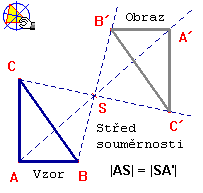 |
Na obrázku vidíte 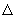 ABC - vzor zobrazenı ve støedové somìrnosti se støedem S na A'B'C' - obraz. Body A', B', C' jsou tedy obrazy bodù A, B, C ve støedové soumìrnosti se støedem S.Všimìte si, jak se ABC pøevrátil. Zatímco u osové soumìrnosti se vzor pøevracel pouze ve smìru kolmém na osu soumìrnosti, ve støedové soumìrnosti je pøevrácení slo�itìjší. Narozdíl od osové soumìrnosti, støedová soumìrnost zachovává rovnobì�nost, to znamená, �e kterákoliv úseèka vzoru je rovnobì�ná se svım obrazem. |
Kterı bod je ve støedové soumìrnosti v�dy samodru�nı?
Které útvary na obrázku v Cabri lze pøesunout tak, aby byly samodru�né?
|
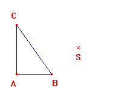 |
Postup konstrukce: Postupnì vyneseme polopøímky AS, BS, CS a sestrojíme body A', B', C' tak, aby bod S byl v�dy støedem úseèky vzor-obraz. Obrazy bodù A,B,C spojíme v trojúhelník, èím� dostaneme obraz ABC ve støedové soumìrnosti se støedem S. |

|
|
|
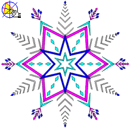 | Støedovì soumìrnı útvar je v�dy soumìrnı podle vlastního støedu S. To znamená, �e ke ka�dému bodu nalezneme jeho obraz ve støedové soumìrnosti se støedem S, kterı rovnì� nále�í tomuto útvaru. Spus�te si ukázku v Cabri a a� si budete jisti, �e poznáte støedovì soumìrnı útvar, vyøešte následující cvièení. |
Nastavte šestiúhelník v Cabri tak, aby byl støedovì soumìrnım útvarem.
Vyjmenujte alespoò 5 støedovì soumìrnıch útvarù z vašeho okolí.